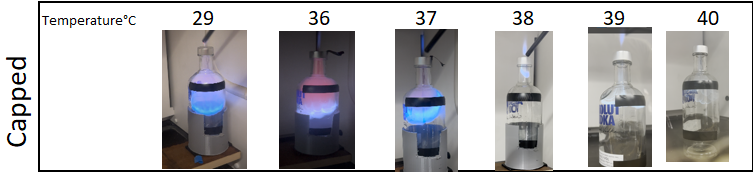
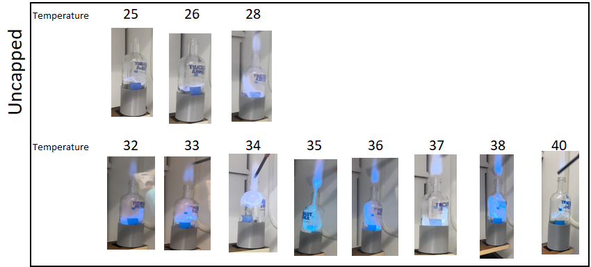

EFFECT OF TEMPERATURE ON FLAME VELOCITY AND THRUST OF AN ISOPROPYL ROCKET

A gif of a test run for measuring flame velocity and thrust at a thermal treatment of 29 degrees Celsius
OBJECTIVE
The primary objective of this study was to analyze the effect of temperature on flame velocity and thrust for an Isopropyl bottle rocket. Through a carefully designed experimental setup, the study aimed to understand the direct dependence between temperature and flame speed, thrust, and impulse, using both capped and uncapped tests. By evaluating these parameters, the study sought to create a viable method for quantifying the effects of temperature in a safe, repeatable, and data-driven manner.
METHODOLOGY
- Experimental Design: A glass bottle filled with isopropyl vapor was heated to specific temperatures using a sous-vide before being ignited. A seesaw-like setup was employed to measure the thrust generated.
- Equipment Utilization: Various instruments such as infrared thermometers, dial thermometers, vernier calipers, and cameras were used for precise measurements.
- Data Collection: Flame velocity and thrust were captured using video analysis, employing software like Tracker for post-processing.
- Analysis: Flame speed, thrust, and impulse were analyzed as functions of temperature and cap size. A scatter plot and error bar plot were constructed to represent the data.
- Safety Measures: Precautions were taken to ensure the safe handling of flammable materials, including using a fume hood, safety goggles, and careful handling of electrical equipment.
SKILLS LEARNED
- Experimental Design and Execution: The ability to design and conduct a complex experiment with multiple variables and safety considerations.
- Quantitative Analysis: Skills in analyzing displacement data, utilizing Newton's Second Law, and applying mathematical models.
- Instrumentation and Measurement: Proficiency in using a range of scientific instruments, ensuring their correct application, and understanding their limitations.
- Data Interpretation: Ability to interpret the results, recognize trends, and draw meaningful conclusions from the data.
- Collaborative Teamwork: Collaboration among team members to ensure efficient execution of the experiment, including the sharing of responsibilities.
LIMITATIONS
- Residual Water: The presence of residual water inside the bottle between trials could have altered the combustion process, affecting flame velocity.
- Inconsistent Coating: Inconsistencies in coating the bottle's inner surface with alcohol may have led to varying fume distribution, impacting results.
- Equipment Limitations: The limitations of the equipment, such as the cameras, Tracker software, and the sous-vide, may have introduced inaccuracies in measurements.
- Temperature Accuracy: Minor variations in the sous-vide's temperature accuracy could have affected flame speeds and alcohol fume distributions.
- Exposure of Isopropyl Alcohol: Inadvertent exposure of the isopropyl alcohol container to air could have led to inconsistencies in the experimental results, affecting flame speed and energy release.
- Generalized Approach to Impulse: The generalized approach to calculating impulse may not have accurately represented the exact impulse of the combustion process. More precise instrumentation might improve this aspect.
- Limited Range of Nozzle Diameters: The limited range of nozzle diameters tested may have restricted the understanding of how the outer diameter affects flame speed and thrust.
- Safety Constraints: The handling of flammable materials and hazardous gases necessitated stringent safety measures, possibly restricting certain aspects of the experimental design.
Documentation
If the PDF failed to load, refresh or download to view here: Download PDF

